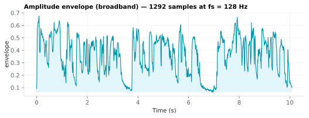
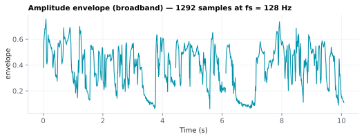

On this page
6.5.1Amplitude envelope (broadband)
The broadband amplitude envelope is the slow-varying "loudness contour" of the audio — how the overall energy of the signal rises and falls over time, with the fast carrier (the individual pressure oscillations) stripped away.
6.5.1.1What it is
The broadband amplitude envelope is the slow-varying "loudness contour" of the audio — how the overall energy of the signal rises and falls over time, with the fast carrier (the individual pressure oscillations) stripped away. For speech it tracks the syllabic rhythm: each syllable is a bump in the envelope. It is the single most widely used acoustic predictor in cortical-tracking / temporal-response-function (TRF) studies.
It is emitted as one column, envelope, in the per-stimulus
acoustic/<stim>_acoustic.mat sidecar, sampled on the shared analysis grid
(t, fs) so it lines up sample-for-sample with the other acoustic time
series.
6.5.1.2See it


6.5.1.3In your output
| variable | size | MATLAB class |
|---|---|---|
envelope | 1292 × 1 | double |
t | 1292 × 1 | double |
fs | 1 × 1 | double |
6.5.1.4MATLAB
S = load('acoustic/LJ002-0321_acoustic.mat');
whos('-file', 'acoustic/LJ002-0321_acoustic.mat') % variables, sizes, classes
plot(S.t, S.envelope); xlabel('Time (s)'); ylabel('envelope') % one value per time step, fs = S.fs Hz
6.5.1.5How it's computed
SENSI SpeechFeatures offers two envelope methods (toggle: env_method). Both
return a value at every point of the canonical grid N = round(duration × rate) and then apply a power-law compression comp (default
log₁₀(2) ≈ 0.30103).
rms (default) — faithful replica of mTRFenvelope.m → mTRFresample.m.
This is a direct port of the mTRF-Toolbox envelope routine Crosse 2016, the
de-facto reference for speech-TRF work, and matches it sample-for-sample (no
buffer, working along the time axis):
-
Square the waveform —
y²is instantaneous signal power. -
Centered moving-average resample onto the grid: output frame
iis placed at timet = i / rateand set to the mean ofy²over the samples in[round(sr·(t − h)), round(sr·(t + h))], where the half-windowh = 0.5 · window / rate. The first frame sits att = 0as a clamped half-window (this centering is what makes it bit-identical to mTRF, and is the one thing a naive contiguous-bin average gets wrong — it introduces a half-frame phase shift). The square-window average is simultaneously the anti-alias filter and the downsampling step; no separate filter is applied. -
Square root —
√(mean power)is the RMS amplitude of each frame. -
Power-law compress — raise the RMS envelope to the exponent
comp.The
windowparameter (default1) sets the averaging width in output samples; values> 1overlap adjacent frames for extra smoothing without changing the output rate — the samewindowargument asmTRFresample.The mTRF default, which SENSI SpeechFeatures matches, is the exact constant
comp = log₁₀(2) ≈ 0.30103— carried at full float precision, not the rounded0.3. On normalized audio (values < 1) the difference is systematic: a rounded0.3makes every frame slightly larger than MATLAB's, so thermsmethod would not be bit-for-bit withmTRFenvelope.m. This is not arbitrary: Stevens' loudness law found that the perceived loudness of a tone grows as a power function of intensity with exponentlog₁₀(2)Stevens 1955, andmTRFenvelope.mcites that law for its default ("to model human auditory perception"). Note the base of the exponent: the toolbox (and SENSI SpeechFeatures) raise the RMS amplitude tolog₁₀(2), while Stevens' exponent is on intensity. Intensity is proportional to amplitude squared, soamplitude^0.301 = intensity^0.151: half the loudness-law exponent. The step is a compression motivated by the loudness law, not a re-derivation of it.
hilbert — analytic-signal envelope. Takes the magnitude of the
analytic signal |hilbert(y)| (the instantaneous amplitude), then
band-limits and resamples it from sr to rate with scipy.signal. resample_poly (a polyphase FIR anti-alias filter), and applies the same
comp compression. The Hilbert envelope is smoother and is the more common
choice in some auditory-neuroscience pipelines; the rms method is closer
to the mTRF lineage. The two are highly correlated for speech.
Lowering comp toward 0 flattens the dynamic range (loud and quiet moments
move closer together); comp = 1.0 disables compression and returns the
linear RMS / Hilbert envelope.
6.5.1.6How to set the analysis rate to match your EEG
A TRF predictor must be sampled at the same rate as the EEG you will
regress it against. Set analysis_rate (Hz) to your post-downsampling EEG
rate — commonly 64 or 128 Hz for envelope-TRF work. Every acoustic
feature in the .mat is computed on the single grid N = round(duration × rate), so:
envelope,onset_envelope,logmel,mfccall have exactlyNrows and share thettime vector and scalarfs— no per-feature resampling or alignment is needed on your side. The 1-D series (t,envelope,onset_envelope) are saved as(N, 1)column vectors so they stack directly withlogmel(N, n_mels)/mfcc(N, n_mfcc)into a time-by-feature TRF predictor matrix in MATLAB ([envelope onset logmel]).- To align with the EEG, resample your EEG to
analysis_rate(or pickanalysis_rateto equal it). Length will beround(duration × rate); trim the EEG and predictor to the common length.
The envelope is returned raw (not z-scored / not normalized) so you keep
full control: most TRF pipelines z-score each predictor and each EEG channel
before fitting. The config struct in the .mat records analysis_rate,
env_method, env_comp, env_window, and source_sr for provenance.
6.5.1.7In the code
Source: sensi/extractors/acoustic_ts.py → amplitude_envelope(y, sr, rate, *, method, comp, window). The rms branch is a line-for-line port of
mTRFenvelope.m + mTRFresample.m: for each output frame it averages y²
over the centered window [round(sr·(t−h)), round(sr·(t+h))] (with t = i/rate
and h = 0.5·window/rate), clamped to the signal bounds, then takes the square
root and raises to comp. MATLAB's round-half-away-from-zero is reproduced
(_mround) so frame boundaries match exactly; a regression test
(tests/extractors/test_acoustic_ts.py::test_rms_matches_mtrfenvelope_reference)
asserts bit-for-bit agreement with an independent transcription of the two .m
files. The hilbert branch uses scipy.signal.hilbert + resample_poly with
up/down reduced by their GCD. The audio is loaded mono at its native sample
rate (librosa.load(..., sr=None)); content above rate/2 is removed by the
averaging / FIR step.
6.5.1.8Library
import librosa
from extractors.acoustic_ts import amplitude_envelope
y, sr = librosa.load("stim.wav", sr=None, mono=True)
import numpy as np
env = amplitude_envelope(y, sr, rate=128, method="rms",
comp=float(np.log10(2)), window=1.0)
# env.shape == (round(len(y)/sr * 128),)
6.5.1.9EEG rationale
Auditory cortex phase-locks to the speech envelope: the slow (≈1–8 Hz) amplitude modulations of speech are reconstructable from, and predictive of, the ongoing EEG/MEG Lalor 2010 Ding & Simon 2012. In a forward TRF you regress the EEG onto the envelope to estimate the brain's impulse response to acoustic energy; in a backward (decoding) model you reconstruct the envelope from the EEG. Envelope tracking is sensitive to attention, intelligibility, and hearing status, which is why it is the workhorse predictor for naturalistic-listening studies.
The envelope is also the base signal for the onset envelope — its half-wave-rectified derivative — and a useful covariate to regress out when isolating higher-level (lexical, semantic) responses.
6.5.1.10Papers
- Crosse 2016 Crosse, Di Liberto, Bednar, Lalor. The Multivariate Temporal Response Function (mTRF) Toolbox: A MATLAB Toolbox for Relating Neural Signals to Continuous Stimuli. Frontiers in Human Neuroscience 10, 604. doi:10.3389/fnhum.2016.00604 — reference TRF toolbox;
mTRFenvelope.mis the algorithm replicated by thermsmethod. - Stevens 1955 Stevens. The Measurement of Loudness. Journal of the Acoustical Society of America 27(5), 815–829. doi:10.1121/1.1908048 — loudness grows as a power function of intensity with exponent
log₁₀(2); the source of the default compression exponent. - Lalor 2010 Lalor & Foxe. Neural responses to uninterrupted natural speech can be extracted with precise temporal resolution. European Journal of Neuroscience 31(1), 189–193. doi:10.1111/j.1460-9568.2009.07055.x — EEG TRF to the speech envelope.
- [Ding 2012] Ding & Simon. Neural coding of continuous speech in auditory cortex during monaural and dichotic listening. Journal of Neurophysiology 107(1), 78–89. doi:10.1152/jn.00297.2011 — phase-locked cortical representation of the slow speech envelope.